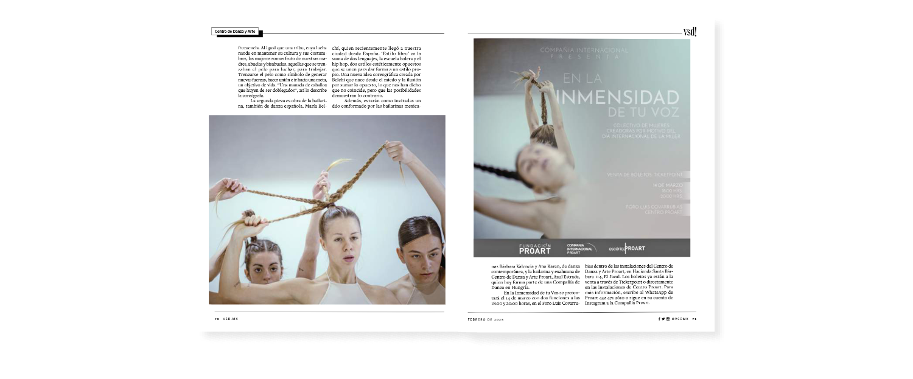
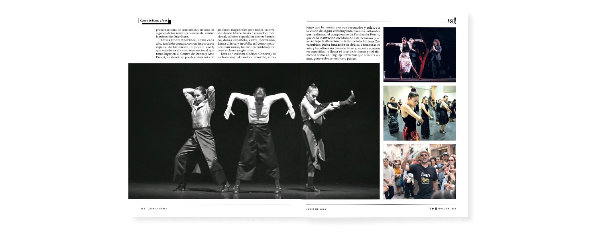
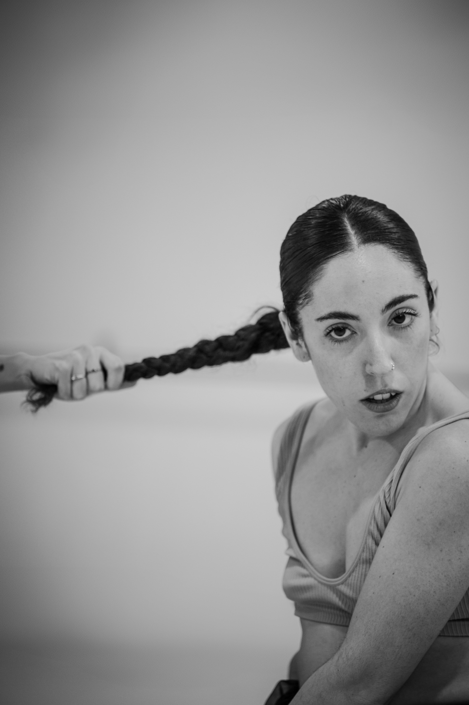
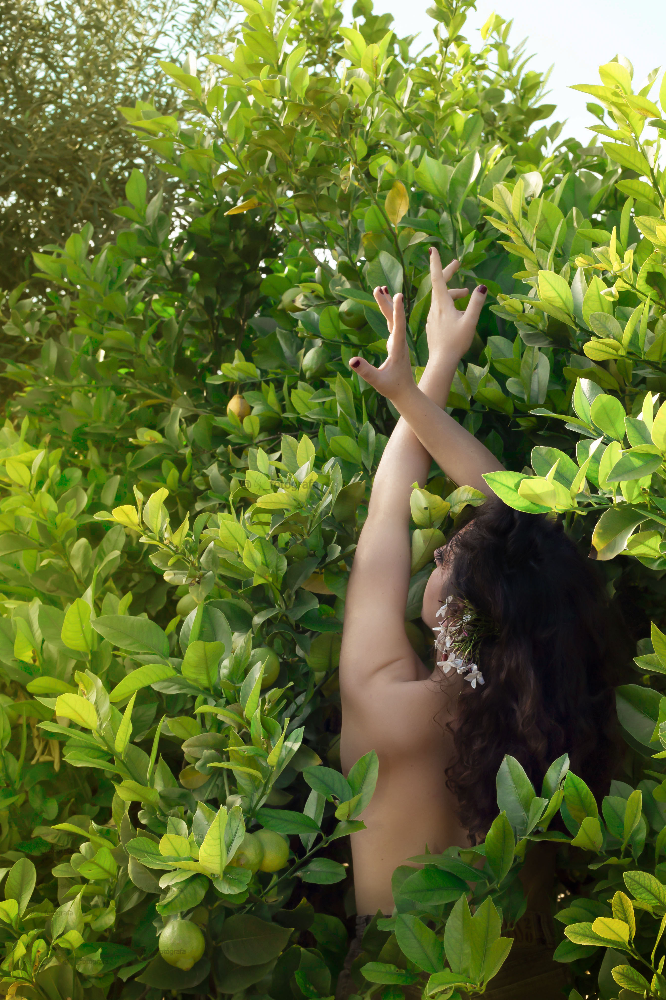
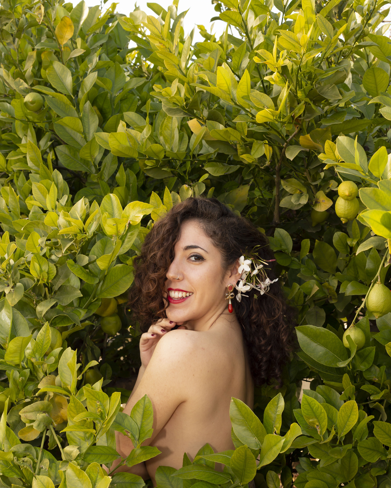
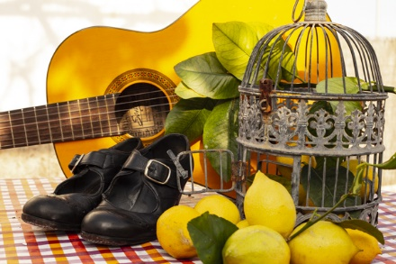
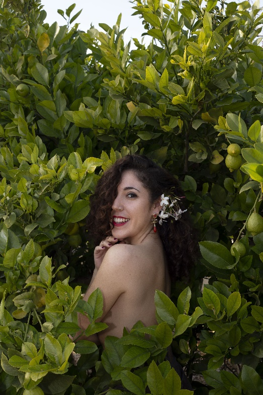
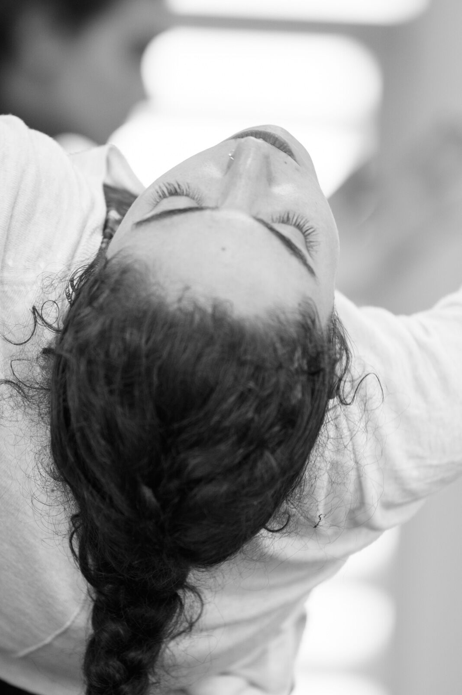

Prensa






Hay una pregunta que Lucía Nicolás lleva bailando desde que tiene memoria:
¿dónde vive la danza española y el flamenco cuando nadie lo está mirando?

Nació en la desconocida Murcia, donde jura haber bailado desde que tiene uso de razón. A los quince años se fue a Madrid persiguiendo su sueño de ser artista —sin mapa, sin red— dentro de conservatorios, absorbiendo de grandes maestros, rodeada de rigor y disciplina. Luego necesitó más.
Diez años después se fue a Querétaro, México, trabajando cinco años en Proart —sede del reconocido Festival Ibérica Contemporánea— creando, enseñando, interpretando, pensando. Lo suficientemente lejos de España para verla con claridad.
Tiene el Premio Extraordinario Fin de Carrera del Real Conservatorio Mariemma, el título en Creación y Coreografía de Danza Española y el Máster en Flamencología —no como credenciales, sino como herramientas de ruptura.
Su trabajo vive en la intersección de la danza española, el movimiento contemporáneo, la música techno y las herramientas digitales. No fusión. No pastiche. Algo más parecido a una colisión: dos sistemas que no deberían coexistir, forzados a la misma frecuencia hasta que algo nuevo emerge.
Ha bailado en España, México, Ecuador, Rumanía y Turquía. Ha construido piezas cortas y espectáculos completos. Ha sido galardonada con la Beca Ballet Nacional de España y con el Premio Estancias Coreográficas Yoshua Cienfuegos, entre otros. Su obra ha sido interpretada en certámenes y festivales nacionales e internacionales. No hace ruido con ello. Sigue avanzando.
«Siempre he sido muy callada. Mi abuelo bromeaba diciendo '¡Lucía, cállate ya, que no paras de hablar!', y me hacía mucha gracia. Ahora entiendo que mi fuerza está en la danza: ahí siento que grito, que no me da vergüenza decir lo que pienso, que me siento fuerte y con poder. Cosa que en la vida real, sinceramente, me cuesta.»



![La niña de [fuego]](la niña de fuego/IMG_3466.JPG)





.png)
![La niña de [fuego]](la niña de fuego/IMG_3473.JPG)
![La niña de [fuego]](la niña de fuego/IMG_3482.JPG)
Solo · danza + live session con productor musical
Una mujer baila el personaje que la consume. Maruja Mallo, Lola Flores, Marisol —las que tuvieron que incendiarse para ser vistas. Cuando la máscara cae, solo queda el esqueleto. ¿Quién es un artista cuando se quita su personaje?
Con espacio sonoro en directo de Diego Gálvez, la pieza integra castañuelas y zapateados transformados en señales sonoras vía controlador MIDI y Ableton Live. Tradición y tecnología sin jerarquías.


Creación grupal · 5 intérpretes
Cinco mujeres de distintas disciplinas dancísticas buscan la misma frecuencia. La trenza como tejido colectivo, rito generacional y resistencia. Un paisaje distópico, abstracto y libre de estigmas en el que el cuerpo flamenco se convierte en territorio poético.
Creada en el marco del Festival Ibérica Contemporánea (México), la pieza ha sido interpretada en la Gala España Clásica dentro del 20 Aniversario de Ibérica Contemporánea en la ciudad de Querétaro, México, y ha sido seleccionada en el Certamen Coreográfico de Madrid Paso a 2.
Proceso creativo


Espectáculo · Cía. Internacional Proart
El Pan de Ayer es un espectáculo de la Compañía Internacional Proart bajo la dirección artística de Sandra Ostrowski. Una obra sobre cinco mujeres que tuvieron que callar para sobrevivir, que cuidaron de sus familias mientras el mundo se deshacía fuera, que alzaron la voz cuando podían y aprendieron a construir sueños sobre un lienzo de sombras.
Lucía Nicolás formó parte del elenco como intérprete solista y colaboró en la construcción del lenguaje de danza española y flamenco, aportando su lenguaje técnico al universo escénico de la pieza. Un espectáculo de 55 minutos que recorrió festivales nacionales e internacionales y fue recibido en el Museo de la Ciudad de Querétaro con cobertura en prensa local.
Dirección artística: Sandra Ostrowski. Producción: Compañía Internacional Proart / Fundación Proart, México.
.png)
.png)
.png)
.png)
.png)
Festival Encalé · Flamenco In Situ · Guadalajara, México
Lucía Nicolás fue invitada especial del Festival Encalé. Flamenco In Situ, que se celebra en la ciudad de Guadalajara, México. Allí impartió diferentes talleres así como participó en el Laboratorio de Creación de la bailaora Karen Lugo.


Espectáculo · Cía. Internacional Proart
Una creación del coreógrafo brasileño Eduardo Alvés que aborda el Alzheimer desde una perspectiva radicalmente personal. A través de un lenguaje de movimiento contemporáneo y una escenografía de cajas blancas —símbolo de los recuerdos que se acumulan, se desplazan y se pierden— la pieza construye un retrato físico y emotivo de la memoria fragmentada. Una obra que no explica la enfermedad: la habita.
Producida en el marco de la Compañía Internacional Proart, se estrenó en el Teatro Metropolitano de Querétaro en 2022.
Dirección artística: Sandra Ostrowski · Dirección general: Adriana Covarrubias · Coreografía: Eduardo Alvés · Intérpretes: Alejandra Sosa, Arturo Sandoval, Eduar Morillo, Sandra Ostrowski, Lucía Nicolás · Diseño de iluminación: Marcela Dovali · Diseño de vestuario: Sandra Ostrowski y Eduardo Alvés · Confección de vestuario: Lorenza Lameiras · Producción: Compañía Internacional Proart, Querétaro, México.


Espectáculo · Ballet Junior de Danza Clásica y Danza Española Proart
Érase una vez, una aldea en la que siempre brillaba el sol y todo era posible. Era un lugar de lavanda, chile y nopal, habitado por muñecas y un millón de colibríes. Aquellas muñecas, que un día fueron olvidadas por sus dueñas, seguían habitando en el eco feliz de aquellos juegos infantiles, y ahí residía su magia. La aldea sonaba a risa y canción, y sabía a mole, chocolate y alegrías. Allí no existían los días grises, y si alguna lágrima de tristeza se atrevía a cruzar los muros, se le daba un abrazo que la convertía en caricia.
Todo era divertido, y las muñecas se pasaban las horas cantando, corriendo descalzas y haciendo girar sus faldas al ritmo que les marcaba el viento. Era un lugar de inocencia, ternura y amor. Pero un día, las muñecas que hasta entonces habían estado ajenas al mundo que estaba al otro lado, se dieron cuenta de que fuera, la vida era muy distinta a lo que ellas pensaban. Preocupadas, algunas muñecas decidieron hacer algo. Los animaron a quitarse los zapatos y a sentir la hierba, a bailar con los ojos cerrados y a contar todos los colores que esconden las alas de las mariposas. Y aquellas personas empezaron a recordar lo que significaba volver a ser un niño.
Creación: Lucía Nicolás y Vanesa Ramos · Dirección: Sandra Ostrowski · Dirección general: Adriana Covarrubias · Cuento: Sara Fernández · Intérpretes: Ballet Junior de Danza Clásica y Danza Española Proart · Diseño de vestuario: Lucía Nicolás y Sandra Ostrowski · Confección de vestuario: Lorenza Lameiras.


Dúo · Danza Española · 2015
La primera creación de Lucía Nicolás, una pieza de dúo creada junto a Alejandro Muñoz en 2015. La obra parte de la guerra civil española para contar una historia íntima: una mujer que espera a un marido que no vuelve. Cuando la radio anuncia el fin de la guerra, él aparece — o quizá solo su recuerdo.
Juntos atraviesan el dolor de la ausencia, la rabia del abandono, la ternura del reencuentro y una alegría frágil que se desvanece tan pronto como llegó. La pieza vive en la ambigüedad entre lo real y lo soñado, entre la presencia y la memoria, y en la pregunta que nunca se resuelve: ¿ha vuelto de verdad o es el cuerpo quien se niega a soltar lo que ama?
Coreografía e interpretación: Alejandro Muñoz y Lucía Nicolás · Diseño de vestuario: María Dolores Marín.


Dúo · Danza Contemporánea + Flamenco · 30 min
La Mismidad da título al recorrido personal del ser humano tras la búsqueda de su propia identidad. Nos muestra cómo nuestra esencia se crea, cambia y evoluciona a través del tiempo, cómo nos afecta el ser del otro cuestionándonos lo que somos y queremos ser.
Una pieza multidisciplinar que desarrolla un nuevo lenguaje dancístico basado en el mestizaje de la Danza Contemporánea y el Flamenco, generando nuevos mundos y formas que asientan sus bases en la importancia del pensamiento crítico. La vida es un proceso de equilibrio, una balanza a la que debemos subir sin miedo a desestabilizar y, sobre todo, sin miedo a caer.
Interpretada en el Festival Flamenco de Cuba y en la clausura del Festival Ibérica Contemporánea.
Idea original: Sandra Ostrowski y Lucía Nicolás · Dirección: Sandra Ostrowski · Coreografía e interpretación: Sandra Ostrowski y Lucía Nicolás · Dirección de escena: Noelia Rua · Diseño de vestuario: Sandra Ostrowski · Producción: Compañía Internacional Proart.



Espectáculo · Danza Española · ~1h 15min
Ocho años, 348 km y muchas maletas. Limoneando nace como un homenaje a Murcia, a sus raíces, a su tierra. Una ruta por la Región desde un punto de vista creativo, joven y renovador, contada a través de las cuatro formas de la Danza Española: Folklore, Escuela Bolera, Flamenco y Danza Estilizada.
Una obra de danza que consigue emocionar, hacer reír y encender la pasión por la tradición murciana desde una perspectiva fresca y personal. Con humor, con cariño, con emotividad. Cuatro bailarinas profesionales construyen un lenguaje propio nutrido de la Dramaturgia y la Danza Contemporánea, donde la tradición se vive como algo cercano y vivo.
Dirección: Lucía Nicolás · Asistente de dirección: Mª Dolores Marín · Coreografía: Lucía Nicolás, Mª Dolores Marín y Nella Madarro · Guion y Dramaturgia: Maite Piqueras · Diseño de iluminación: Jesús Palazón · Diseño de vestuario: Inmaculada Serrano, Maite Piqueras y Mª Dolores Marín · Elenco: Lucía Nicolás, María Valverde, Lucía Marcos y Cecilia Ródenas.


Videoclip · Dirección escénica y estética · 2023
En 2023, Lucía Nicolás colaboró con la cantante YOMY como directora escénica y estética en el videoclip de Flores Apagadas. Un trabajo en el que puso al servicio de la imagen musical su mirada como coreógrafa, cuidando la puesta en escena, la narrativa visual y la estética del proyecto.
Una experiencia que amplía su lenguaje creativo más allá del escenario, llevando la dirección artística al formato audiovisual.
Ver videoclip
.jpeg)

.jpeg)
Videoclip · Coreógrafa y bailarina · 2025
En 2025, Lucía Nicolás participó como coreógrafa y bailarina en el videoclip de Ta-riá, single de la cantante YOMY — su hermana. Una canción cargada de emoción que YOMY le dedicó y en la que Lucía puso cuerpo y movimiento a algo profundamente personal.
Una colaboración donde lo artístico y lo familiar se funden, traduciendo en danza lo que las palabras de la canción ya decían.
Ver videoclip


Poderes, capas y algún que otro accesorio · Cía. Internacional Proart · X Festival Ibérica Contemporánea
Las Supers: Poderes, capas y algún que otro accesorio. Es una pieza creada por Mariana Collado para la Compañía Internacional Proart, dentro del marco del X Festival Ibérica Contemporánea en México. Una pieza que explora el universo de las superheroínas encarnadas en cuatro bailarinas de danza española y danza contemporánea, todas usando el zapato de tacón.
«Mi poder reside en el poder de todas estas mujeres que me rodean, que hacen que me eleve hasta el lugar donde los juicios, los cuestionamientos y las preguntas sin respuesta cobren el sentido necesario para vivir la vida liberadas y empoderadas.»
Coreografía y dirección: Mariana Collado · Intérpretes: María Belchí, Sandra Ostrowski, Sandra Díez y Lucía Nicolás · Música: Diego Gálvez y Lucía Nicolás · Apoyo a la producción: Fundación Proart e Ibérica Contemporánea.
Reflexiones sobre la creación coreográfica contemporánea en el flamenco · TFM · Máster en Flamencología · 2024
El caos creativo. Reflexiones sobre la creación coreográfica contemporánea en el flamenco es el Trabajo de Fin de Máster de Lucía Nicolás, presentado en 2024 dentro del Máster de Flamencología. La investigación se adentra en los procesos de creación coreográfica del flamenco contemporáneo, explorando cómo los creadores y creadoras actuales construyen sus obras, qué metodologías siguen, qué les impulsa a crear y qué papel juega la figura del espectador en ese proceso.
A través de un recorrido por los antecedentes creativos del baile flamenco desde principios del siglo XX hasta la actualidad, y del acercamiento directo a artistas representativos del panorama actual, el trabajo busca dar visibilidad a unos métodos de creación que, a diferencia de lo que ocurre en la danza contemporánea o clásica, rara vez se documentan o se analizan en profundidad. El resultado es una reflexión que nace de la propia práctica como coreógrafa y de la búsqueda de nuevos lenguajes con los que seguir haciendo evolucionar el flamenco sin perder sus raíces.
Leer TFM completo (PDF)
Cuando no bailo, escribo.
Donde nadie quiere mirar es el espacio donde Lucía deposita lo que no cabe en el cuerpo. Un blog de textos, reflexiones y fragmentos que nacen del mismo lugar que sus piezas: la necesidad de decir algo que no se puede callar.
Leer el blog«El cuerpo recuerda lo que la palabra olvida. Bailar es traducir esa memoria en presente, hacerla carne, hacerla gesto, hacerla temblor.»
Para colaboraciones, programación o cualquier consulta:
d.esp.lucianicolas@gmail.com
.jpeg)
.jpeg)